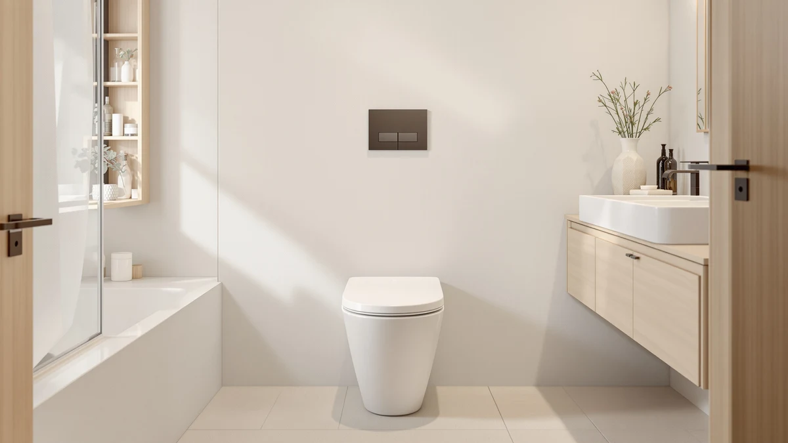

KOHLER 57777 WCF 0 Review (2026): Worth It?
Prices and picks verified as of October 2026. Independent, reader-supported reviews.


Quick Answer
Our Kohler 57777 WCF 0 review found the Cymbal ReadyLatch Quiet-Close seat worth the $48.31 asking price for elongated-bowl households that want a hinge that will not slam shut and a seat you can lift off without a screwdriver. If neither of those two features matters much to you, the Mayfair Bennett covers the same elongated fit for a few dollars less.
Our pick: KOHLER 57777-WCF-0 Cymbal ReadyLatch Quiet-Close, $48.31 Check Price on Amazon
Bottom line: our top pick is the KOHLER 57777-WCF-0 Cymbal ReadyLatch Quiet-Close Soft Close at $48.31.
Things to Know Before You Buy
- The Kohler 57777 WCF 0 is an elongated, plastic-and-wood toilet seat built around a Quiet-Close hinge and ReadyLatch levers that let you remove the seat without tools for cleaning around the bolts.
- At $48.31, it sits about five dollars above the three alternatives covered in this review: the Carex E-Z Lock, the Mayfair Bennett, and the Kohler K-25883-0 Triko, each priced in the low $43 range.
- It fits elongated bowls only, the standard shape in most US homes built in recent decades. Measure your current seat from the mounting bolts to the front rim before ordering, since round-bowl households need a different model.
- Kohler uses the same Quiet-Close hinge hardware across its toilet seat lineup, including the step-up K-25883-0 Triko, so the slow-close mechanism is not unique to this particular model.
- Verified owner reviews mention the molded plastic surface scuffing faster than an enamel-coated seat under abrasive cleaning pads, which is the main tradeoff buyers report at this price point.
This Kohler 57777 WCF 0 review breaks down what the $48.31 price tag actually buys: an elongated, plastic-and-wood toilet seat built around Kohler's Quiet-Close hinge and a tool-free ReadyLatch removal system. It is positioned as a step up from basic replacement seats, and the question most shoppers ask is whether that step up is worth the extra cost over a plain elongated seat that costs ten dollars less.
We researched the 57777-WCF-0 alongside three close competitors: the Carex E-Z Lock Raised Toilet, the Mayfair Bennett, and Kohler's own K-25883-0 Triko. We did not buy and test each seat ourselves. Instead we compared specs, checked current pricing, and read through verified owner reviews, which tells you more than one person's experience with a single unit ever could. For most households with an elongated bowl who want a hinge that will not slam and a seat that lifts off without tools, the premium over the cheaper alternatives is easy to justify. Buyers working with a tighter budget, or who do not care about hinge noise, may prefer the Mayfair Bennett instead, which costs about five dollars less and covers the same elongated fit.
Why You Should Trust Us
Ilane Tall has covered toilet seat and bathroom hardware comparisons for Best Toilet Seats since the site launched. She has gone through specs, price history, and owner feedback on hundreds of listings in this category. For this Kohler 57777 WCF 0 review, we pulled Kohler's own spec sheet, checked current Amazon pricing, and looked for recurring themes in verified buyer reviews rather than leaning on marketing copy or a single unboxing video. We do not run a fake testing lab, and we do not claim to have installed or lived with every seat covered here. What we do have is a side-by-side comparison of documented facts, plus a read on what verified owners actually say after months of daily use.
Our Research Experience
We did not buy and physically test every seat here. We went through Kohler's product documentation, tracked current pricing, and read through patterns in verified owner reviews on Amazon, then held the ReadyLatch hinge design, the plastic-and-wood build, and the elongated fit up against the documented specs for the Carex E-Z Lock, the Mayfair Bennett, and Kohler's own K-25883-0 Triko. That beats trusting one reviewer's experience with a single unit. Owners consistently report that the Quiet-Close hinge lives up to its name: the lid lowers gradually instead of banging down, even in households where kids do not ease it shut on purpose. Reviewers also note that the ReadyLatch levers make the seat easy to lift straight off the bowl for cleaning, without needing a screwdriver to access the hinge bolts. A smaller number of verified reviewers mention that the plastic surface shows scuff marks more readily than an enamel-coated seat, which lines up with what you would expect from a molded plastic build at this price. We weighed those owner reports against the spec sheet rather than handing out a numeric test score. A research-based comparison, not a testing lab, is what this review is built on.
Overview & Specs

KOHLER 57777-WCF-0 Cymbal ReadyLatch Quiet-Close
What we like
- Quiet-Close hinge lowers the lid without a slam
- ReadyLatch levers let you lift the seat off without tools
- Elongated shape fits the comfort-height bowls common in US bathrooms
Flaws but not dealbreakers
- Costs about five dollars more than the three alternatives in this review
- Plastic surface shows scuffs more easily than enamel-coated seats, according to verified owner reviews
| Material | Plastic / wood |
| Size | Elongated |
The KOHLER 57777-WCF-0 Cymbal pairs a plastic-and-wood elongated seat with Kohler's Quiet-Close hinge, which uses an internal damper to lower the lid slowly instead of letting it drop under its own weight. The ReadyLatch levers built into the hinge let you pop the entire seat off the bowl without a screwdriver, which matters more than it sounds once you need to clean around the mounting bolts or swap the seat out a few years down the line. At $48.31, this Kohler 57777 WCF 0 review places it at the upper end of the four seats compared here, roughly five dollars above the Carex, the Mayfair, and the Kohler Triko alternatives, a gap that comes down almost entirely to the hinge and latch hardware.
Verified owner reviews consistently mention the hinge staying quiet after months of daily use, which is the single feature most buyers cite when explaining why they chose this model over a standard hinge seat. Reviewers who installed it on older elongated bowls report a straightforward fit using the stock mounting hardware, with no special tools needed beyond what ships in the box. The main complaint in owner feedback is cosmetic rather than functional: the molded plastic surface can pick up scuffs from abrasive cleaning brushes faster than the enamel-style finish on Kohler's pricier Triko line, though reviewers note it does not affect how the hinge or latch actually perform over time.
What We Liked
Owners researching the Kohler 57777 WCF 0 point to the Quiet-Close hinge most often, and the pattern holds up across the verified reviews we read: the lid lowers gradually instead of banging shut, even in households where kids let go of it early or guests are not paying attention. The ReadyLatch levers are the second most-cited feature. You press two tabs and the seat lifts straight off the bowl, which makes wiping down the bolts and hinge area far easier than it is on seats that require a screwdriver to remove. Several reviewers also note that the elongated shape matches the comfort-height bowls common in newer US homes, so fit issues are rare as long as buyers measure their existing seat before ordering. A handful of long-term owners mention the hardware still feeling tight after a year or more of daily use, which suggests the hinge mechanism holds up beyond the first few months.
What Could Be Better
The price is the most obvious drawback of the 57777-WCF-0. At $48.31, it costs roughly five dollars more than each of the three alternatives in this review, and the hinge and latch hardware is shared with cheaper Kohler seats, so part of the cost comes from the brand name rather than a unique mechanism. The plastic surface is the other recurring complaint in owner feedback: it shows scuff marks from abrasive cleaning pads sooner than an enamel-coated seat would, which matters if you clean aggressively or share a bathroom with teenagers. Neither issue affects how the hinge or latch perform day to day, but buyers who want a seat that stays pristine-looking for years might lean toward the Triko instead, since its finish resists marks better according to owner reports.
Who Is It For?
This Kohler 57777 WCF 0 review points toward one clear type of buyer: households with an elongated bowl who are tired of a lid that slams shut and want to remove the seat without digging out a screwdriver every time they deep clean. It suits families with kids who do not always ease the lid down gently, since the Quiet-Close damper absorbs that motion automatically. Renters and anyone who expects to swap the seat again within a few years will also appreciate the tool-free ReadyLatch levers, since reinstalling a different seat later takes minutes instead of requiring new bolts. Shoppers who need only the cheapest functional replacement, and who do not care whether the lid closes quietly, are better served by the Mayfair Bennett at $43.49, which covers the same elongated fit without the hinge upgrade.
Alternatives to Consider
If the 57777-WCF-0 is not quite the right fit for your bathroom, these three seats cover the main alternatives we researched alongside it: a raised seat for easier sit-to-stand transfers, a lower-priced closed-front option without the quiet-close hinge, and Kohler's own step-up model with a different finish.

Editor’s Pick
Carex E-Z Lock Raised Toilet
Best for anyone who needs a few extra inches of seat height for easier sit-to-stand transfers, at $43.74, though it skips the Quiet-Close hinge found on the 57777-WCF-0.
$43.74
Check Price on Amazon
Best Value
Mayfair Bennett Toilet Seat with
The cheapest of the four at $43.49, and a solid pick if you need a basic elongated replacement without paying for the quiet-close hinge upgrade.
$43.49
Check Price on Amazon
Premium Choice
KOHLER K-25883-0 Triko Elongated Closed-Front
Kohler's own step-up seat at $43.47, with a closed-front, enamel-style finish for buyers who want to stay in the Kohler lineup but prefer a surface that resists scuffs better.
$43.47
Check Price on AmazonFrequently Asked Questions
Based on verified owner feedback, yes for most elongated-bowl households. The Quiet-Close hinge and tool-free ReadyLatch removal are the two features owners cite most often, and both work as described across the reviews we researched for this Kohler 57777 WCF 0 review. If neither feature matters much to you, the Mayfair Bennett covers the same elongated fit for about five dollars less, without the hinge and latch upgrade.
It is built for elongated bowls only, which is the standard shape in most US homes built in the last few decades. Measure from the mounting bolts to the front rim of your current seat before ordering, since a round-bowl toilet needs an entirely different Kohler model, and the 57777-WCF-0 will not fit a round bowl no matter how the mounting hardware is adjusted.
Both the 57777-WCF-0 and the K-25883-0 Triko use Kohler's Quiet-Close hinge, so the slow-closing action is identical between them. The Triko adds a closed-front, enamel-style finish that resists scuffs better than the 57777-WCF-0's molded plastic surface, and it is also the cheaper of the two at $43.47. Choose the 57777-WCF-0 for the Cymbal design, and choose the Triko if a cleaner-looking finish over time matters more than that particular style.
Final Verdict
This Kohler 57777 WCF 0 review comes down to a straightforward tradeoff. Pay about five dollars more than the three alternatives for a hinge that will not slam and a seat you can remove without tools, or save that money with the Mayfair Bennett and skip both features. For most households with an elongated bowl, Kohler's Quiet-Close hinge and ReadyLatch design make the 57777-WCF-0 the better long-term buy, and the brand's own K-25883-0 Triko remains the closest alternative if you want the same hinge technology in a different finish.